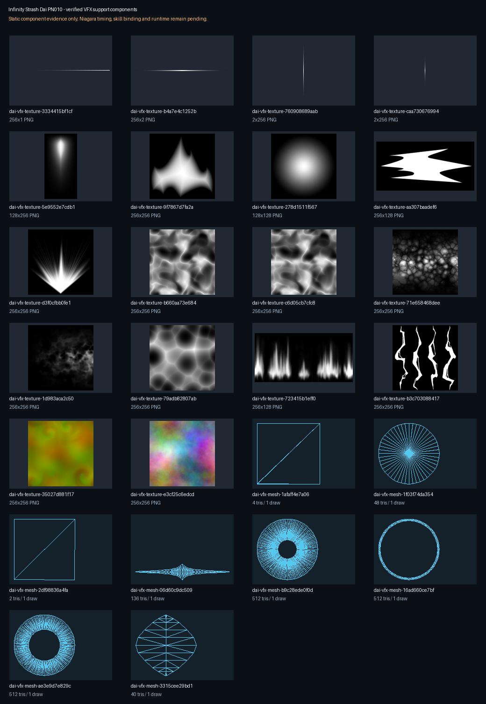

達伊 PN010：Infinity Strash 特效支援元件審查
這不是完整特效，也尚未上架。 六個原作 NiagaraSystem 的來源 package、依賴、貼圖與 StaticMesh 已逐檔驗證；目前沒有可信的 Niagara 播放時序、曲線語意、材質動態參數或技能事件映射，因此技能綁定與 runtime 均維持 0。
本批：6 個根、18 個依現行 vfx-model 貼圖上限轉出的 PNG 元件候選、8 個待 live policy check 的 GLB 元件候選。

| 原作根 | Emitter | Sprite | Mesh renderer | 貼圖 | Mesh | 狀態 |
|---|---|---|---|---|---|---|
NPS_Skl01_Flash_00 | 3 | 0 | 3 | 5 | 2 | 靜態支援元件候選；時序、曲線語意與技能綁定待確認 |
NPS_PN010_Special02_Flash_00 | 3 | 0 | 3 | 4 | 2 | 靜態支援元件候選；時序、曲線語意與技能綁定待確認 |
NPS_PN010_Special03_Slash_00 | 7 | 0 | 5 | 12 | 5 | 靜態支援元件候選；時序、曲線語意與技能綁定待確認 |
NPS_PN010_Special03_EnergyThunderA | 2 | 2 | 0 | 4 | 0 | 靜態支援元件候選；時序、曲線語意與技能綁定待確認 |
NPS_PN010_Special03_Jump_00 | 1 | 1 | 0 | 5 | 0 | 靜態支援元件候選；時序、曲線語意與技能綁定待確認 |
NPS_PN010_Special03_Shuchusen_00 | 2 | 2 | 0 | 4 | 0 | 靜態支援元件候選；時序、曲線語意與技能綁定待確認 |